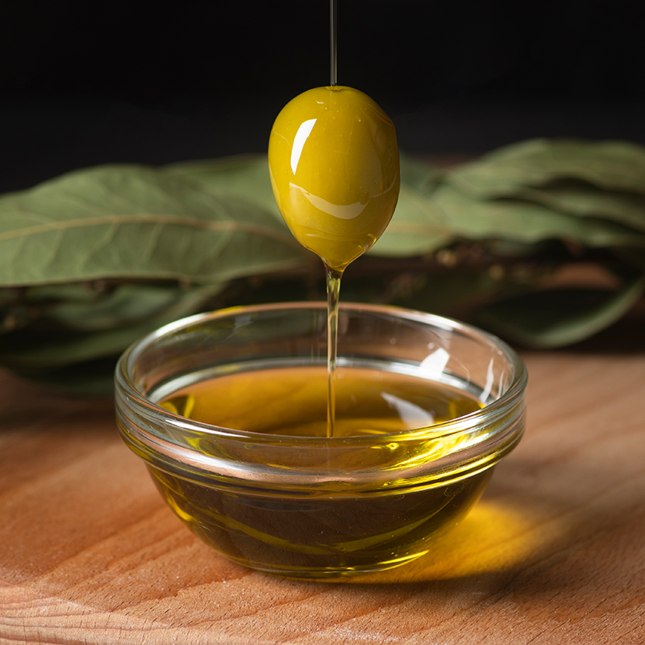

|

|
1. 어두운 곳에 보관
올리브 오일은 빛에 민감합니다. 햇빛에 노출되면 산화가 촉진되어 오일의 질이 빠르게 저하됩니다.
따라서, 올리브 오일은 반드시 어두운 곳에 보관 해야 합니다. 주방에 보관할 때는 찬장이나 서랍 안이 이상적입니다.
2. 서늘한 온도 유지
올리브 오일은 높은 온도에 의해 쉽게 변질될 수 있습니다. 18°C에서 22°C 정도의 서늘한 온도가 적합하며, 열기에 가까운 장소는 피하는 것이 좋습니다. 예를 들어, 오븐이나 가스레인지 근처에 보관하면 안됩니다. 또한, 냉장고에 보관할 경우 오일이 굳을 수 있으므로, 실온에서 서늘하고 안정적인 장소가 가장 좋습니다.
3. 밀폐된 용기 사용
올리브 오일이 공기에 오래 노출되면 산화가 촉진 되어 신선도가 떨어지게 됩니다. 사용 후 뚜껑을 꼭 닫아서 공기와의 접촉을 최소화해야 합니다.
만약 큰 병에 담긴 오일을 사용하고 있다면, 소분해서 작은 병에 옮겨 담으면 공기와의 접촉을 줄일 수 있습니다.
4. 투명한 병 대신 어두운 병 선택
올리브 오일을 구입할 때는 투명한 병보다는 어두운 색의 병에 담긴 제품을 선택하는 것이 좋습니 다. 어두운 색 병은 빛을 차단해 오일의 산화를 방지하는 데 도움이 됩니다. 만약 투명한 병에 담겨 있다면, 구매 후 어두운 병에 옮겨 담아 보관하는 것도 좋은 방법입니다.
5. 냄새와 습기가 없는 곳에 보관
올리브 오일은 주변의 냄새를 잘 흡수하는 특성이 있습니다. 따라서 강한 냄새가 나는 음식이나 재료 근처에 보관하지 않는 것이 중요합니다. 또한, 습기가 있는 장소도 피해야 하며, 건조하고 통풍이 잘 되는 곳이 이상적입니다.
6. 소량 구매 권장
올리브 오일은 시간이 지날수록 품질이 떨어지므로, 한 번에 많은 양을 구매하기보다는 소량씩 자주 구매하는 것이 좋습니다. 또한, 개봉 후에는 가급적 3~6개월 내에 소비하는 것이 좋습니다. 오래 두고 사용할 경우 풍미가 감소하고 산패될 수 있습니다.
|